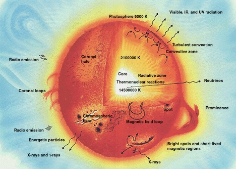
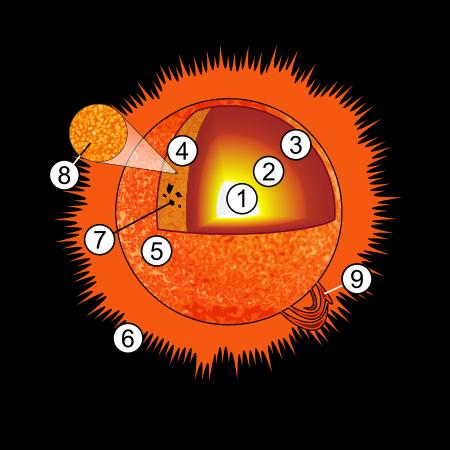
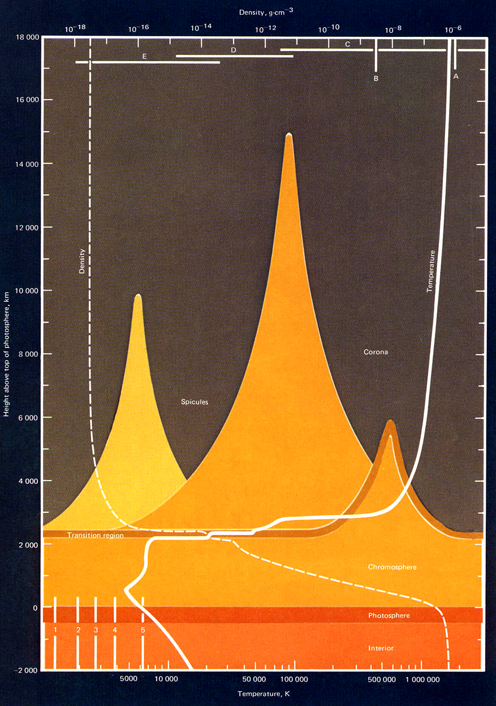
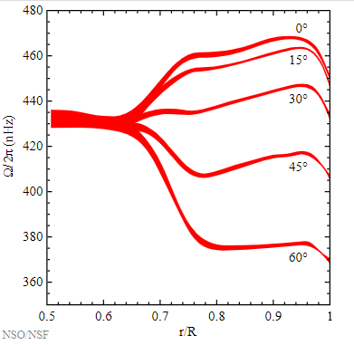

4 Aufbau der Sonne
4.1 Grundprinzipien des Aufbaus der Sonne


In erster Näherung ist die Sonne kugelsymmetrisch aufgebaut. Sie befindet sich in einem stationären Gleichgewicht ohne Kontraktionen oder Schwingungen.
Die Sonne vereint in sich etwa 99.86 % der Masse des Sonnensystems.
Im Innern der Sonne herrscht ein hydrostatisches Gleichgewicht der nach außen wirkenden Druckkräfte und der nach innen gerichteten Gravitationskräfte. Es gilt
\[ \frac{d p(r)}{d r} = - f \frac{\rho(r) m(r)}{r^2} \]
mit
\[ m(r) = 4 \pi \int_0 ^r \rho(r) r^2 \, dr \]
4.2 Energiefreisetzungsprozesse
Die primäre Quelle der Sonnenenergie ist die Verschmelzung von Wasserstoffkernen zu Heliumkernen. Dies geschieht im Kern der Sonne bei Temperaturen von \(1.4 \times 10^7\) K.
In jeder Sekunde werden etwa 620 Millionen Tonnen Wasserstoff in Helium umgewandelt.
4.3 Energietransportmechanismen
Energie gelangt nach außen durch
- Strahlung
- Konvektion
- Wärmeleitung
Benötigt wird ein Temperaturgefälle. Wärmestrom \(\mathbf J = -k \nabla T\).

4.4 Kern
Die Hälfte der Sonnenmasse konzentriert sich innerhalb von 25 % des Sonnenradius. Im Zentrum der Sonne beträgt der Druck 200 Milliarden bar, die Dichte ist 150 g/cm\(^3\). Die Temperatur im Kern ist \(15.7 \times 10^6\) K.
Nur im Kern wird thermische Energie durch Kernfusion freigesetzt. 99 % der Fusionsleistung von \(3.9 \times 10^{26}\) W wird innerhalb von 24 % des Sonnenradius erzeugt. In einem Tausendstel des Volumens der Sonne entsteht die Hälfte ihrer Leistung. Die mittlere Leistungsdichte beträgt aber nur 140 W/m\(^3\).
Die freigesetzte Energie wird durch Strahlung nach außen transportiert.
4.5 Strahlungs- und Konvektionszone
Ab etwa 30 % Sonnenradius findet keine Fusion mehr statt. Wärmeenergie wird neben der Strahlung durch Konvektion transportiert.
Ab 71 % des Sonnenradius wird der Wärmestrom durch Konvektion transportiert. Die Strömungsgeschwindigkeit ist mit ca. 10 m/s gering, die Konvektionszellen sind groß und beständig (Monate bis Jahre), und daher von Rotation und innerem Magnetfeld beeinflusst.
4.6 Sonnenoberfläche und Umgebung
4.6.1 Photosphäre
Die Dichte nimmt immer schneller ab, das Material wird durchsichtig und die Photonen können ungehindert entweichen. Am Sonnenrand sieht man unter flacherem Beobachtungswinkel eine höhere, kältere Schicht, wodurch der Rand dunkler erscheint.
4.6.2 Chromosphäre
Oberhalb der Photosphäre liegt die knapp 2000 km dicke Chromosphäre. Die Temperatur nimmt ab, die Dichte ebenso.
4.7 Äußere Atmosphäre
4.7.1 Korona
Oberhalb der Chromosphäre befindet sich die Korona. Sie geht ohne scharfe Grenze in den interplanetaren Raum über. Die Korona erstreckt sich auf über ein bis zwei Sonnenradien. In der Korona regieren Gravitation und Magnetfeld.
4.7.2 Sonnenwind
In der Korona entsteht der Sonnenwind, der mit etwa 300 km/s die Sonne verlässt.
4.8 Magnetfeld
An der Sonnenoberfläche lässt sich das Magnetfeld wegen des Zeeman-Effekts aus spektroskopischen Beobachtungen feststellen. Spektrallinien spalten sich bei Anwesenheit eines Magnetfeldes auf. Der Spektrallinienabstand ist proportional zur Feldstärke.
Die Feldstärke im Umfeld von Sonnenflecken beträgt bis zu 0.4 T.
Das großräumige Magnetfeld lässt sich nur grob durch ein Dipolfeld beschreiben. An der Sonnenoberfläche ist die Feldstärke mit etwa 100,000 nT nur etwa doppelt so groß wie das der Erde auf der Erdoberfläche.
4.9 Differentielle Rotation
Die Strahlungszone rotiert gleichförmig mit einer Periode von knapp 27 Tagen (Frequenz etwa 430 nHz, s. Abb. Abbildung fig-diffrot) bis zur Tachokline, der Übergangszone zur differentiell rotierenden Konvektionszone.
